Provisjon er en prestasjonsbasert form for lønn der ansatte mottar en del av verdien av det de selger eller produserer. Dette kompensasjonssystemet kobler direkte sammenheng mellom innsats og belønning, og utgjør en viktig del av lønnskostnadene for mange bedrifter.
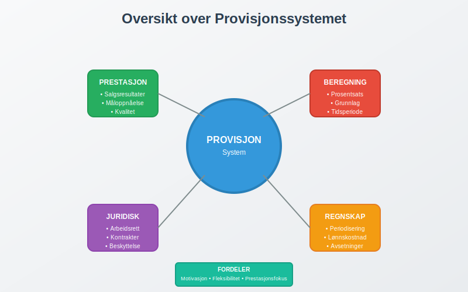
Hva er Provisjon?
Provisjon er en variabel lønn som beregnes som en prosentandel av salgsverdi, fortjeneste eller andre prestasjonsbaserte måltall. Provisjonssystemet brukes hovedsakelig innenfor salg, men kan også anvendes i andre virksomhetsområder der individuell prestasjon kan måles og belønnes direkte.
Provisjonsmodeller
Det finnes flere hovedtyper provisjonsordninger som benyttes i norsk næringsliv:
1. Ren Provisjon
- Kun provisjonsbasert lønn uten fast grunnlønn
- Høy risiko og høy belønning for den ansatte
- Vanlig i eiendomsmegling og forsikringssalg
2. Fastlønn pluss Provisjon
- Kombinasjon av fast grunnlønn og provisjonsbasert tillegg
- Gir økonomisk trygghet samtidig som det motiverer til prestasjon
- Mest utbredt i moderne norske bedrifter
3. Trappeprovisjoner
- Økende provisjonssatser ved høyere salgsvolum
- Motiverer til å overgå salgsmål
- Kompleks beregning men høy motivasjonseffekt
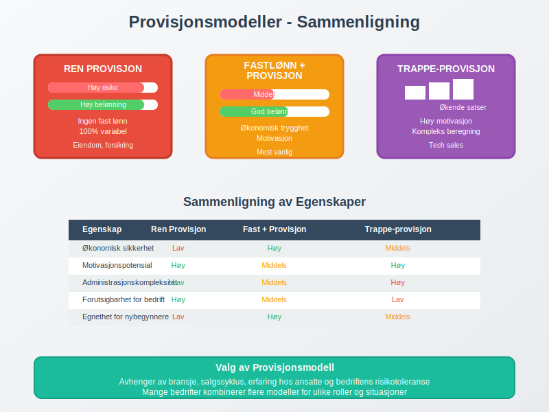
Provisjon i Regnskapet
Regnskapsføring av provisjon krever nøye periodisering og korrekt klassifisering som del av personalkostnadene.
Grunnleggende Regnskapsføring
Provisjoner regnskapsføres når de påløper, ikke nødvendigvis når de utbetales:
| Konto | Debet | Kredit |
|---|---|---|
| Lønnskostnad - Provisjon | X | |
| Skyldig lønn | X |
Periodisering av Provisjoner
Periodiseringsprinsippet krever at provisjoner føres i samme periode som det underliggende salget:
- Salgsmåned: Provisjon påløper
- Utbetalingsmåned: Kontant utbetaling
- Mellomperiode: Påløpt, ikke betalt provisjon
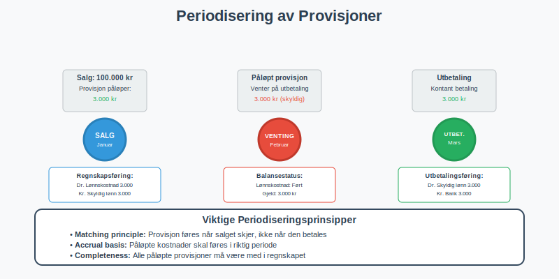
Avsetninger for Variable Provisjoner
For komplekse provisjonsordninger kan det være nødvendig med avsetninger:
Eksempel: Årlig bonusprovisjoner
- Månedlig avsetning basert på foreløpig beregning
- Justering ved årets slutt bason endelig resultat
Juridiske Rammer for Provisjon
Provisjonsordninger er regulert gjennom Arbeidsmiljøloven og kontraktsrett, som setter viktige rammer for how provisjon kan struktureres.
Arbeidsmiljølovens Bestemmelser
- Skriftlig avtale: Provisjonsvilkår må være klart definert
- Minstelønn: Må ikke føre til lønn under lovens minimumsbestemmelser
- Ferierettigheter: Provisjon skal inkluderes i feriepengeberegningen
Kontraktuelle Forhold
Provisjonsavtaler må spesifisere:
- Beregningsgrunnlag: Hva provisjon beregnes av
- Provisjonssats: Prosentandel eller beløp
- Utbetalingsvilkår: Når og hvordan provisjon utbetales
- Oppsigelsesvilkår: Rettigheter ved opphør av arbeidsforhold
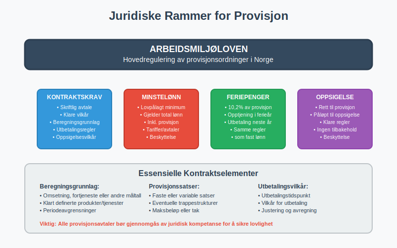
Skatteregler og Arbeidsgiveravgift
Provisjon behandles likt med ordinær lønn when det gjelder skatter og avgifter.
Skattemessig Behandling
For arbeidstakeren:
- Provisjon er fullt skattepliktig som lønnsinntekt
- Skatteres som vanlig lønn med samme satser
- Må oppgis på selvangivelsen som lønn
For arbeidsgiveren:
- Provisjon er fradragsberettiget som lønnskostnad
- Samme tidspunkt for fradrag som regnskapsmessig kostnadsføring
Arbeidsgiveravgift på Provisjon
Arbeidsgiveravgift beregnes på samme måte som for ordinær lønn:
| Avgiftsgrunnlag | Provisjon + Andre Lønnskostnader |
|---|---|
| Avgiftssats | Som for ordinær lønn i samme sone |
| Beregningsperiode | Samme som for øvrig lønn |
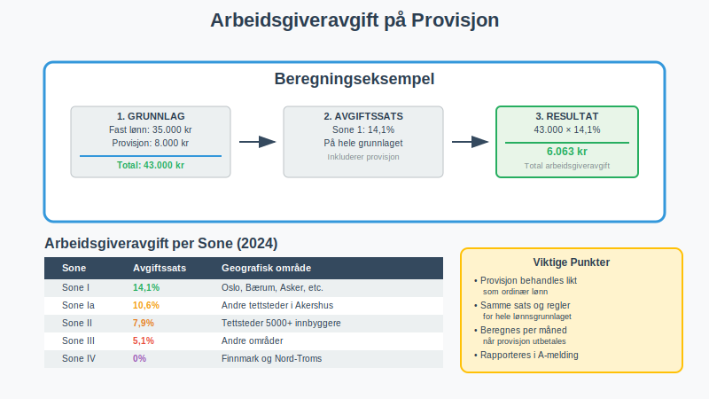
Feriepenger og Provisjon
Feriepenger skal beregnes av provisjon etter samme regler som for ordinær lønn.
Beregningsgrunnlag
- Alle provisjoner inngår i feriepengeberegningen
- 10,2% feriepenger på provisjon opptjent i ferieåret
- Utbetaling sammen med ordinære feriepenger
Regnskapsføring av Feriepenger på Provisjon
Når provisjon påløper:
Debet: Lønnskostnad - Provisjon
Kredit: Skyldig lønn
Samtidig avsettes feriepenger:
Debet: Lønnskostnad - Feriepenger
Kredit: Avsetning feriepenger
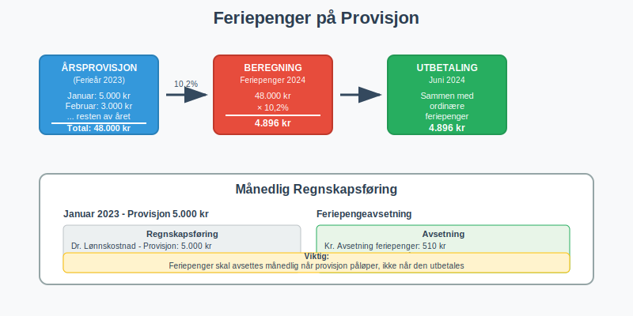
Provisjon i Forskjellige Bransjer
Provisjonssystemer varierer significantly mellom bransjer, med ulike modeller tilpasset specific business needs.
Eiendomsmegling
- Ren provisjon basert på salgspris
- Typisk 1-3% av omsetning
- Lang salgssyklus krever finansiell planlegging
Forsikring
- Førsteårsprovisjoner ved nysalg
- Fornyelseспровисjon på eksisterende kunder
- Kompleks provisjonsstruktur med ulike satser
Teknologisalg
- Kvartalsbaserte provisjoner
- Team-provisjoner i tillegg til individuelle
- Recurring revenue gir kontinuerlige provisjoner
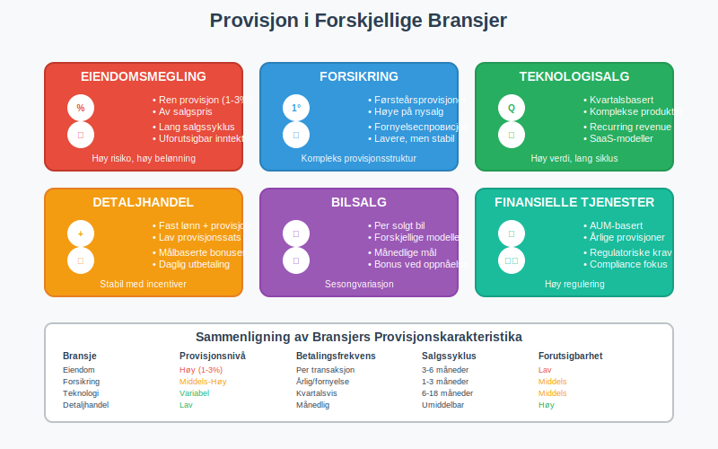
Motivasjon og Provisjonssystemer
Provisjon fungerer som en powerful motivasjonsfaktor, men krever careful design for å oppnå optimale resultater.
Motivasjonseffekter
Positive effekter:
- Økt salgsprestasjoner og produktivitet
- Selvmotivasjon og entrepreneurskap
- Direkte kobling mellom innsats og belønning
Potensielle utfordringer:
- Focus kun på kortsiktige resultater
- Risk for uetisk salesoppførsel
- Høy stress og press på ansatte
Design av Effektive Provisjonssystemer
For å create effective provisjonssystemer bør bedrifter consider:
- Balanserte måltall: Ikke kun salgstall, men også kundetilfredshet
- Team-elementer: Kombinere individuelle og kollektive incentiver
- Sustainable praksis: Avoid å promote shortsighted behavior
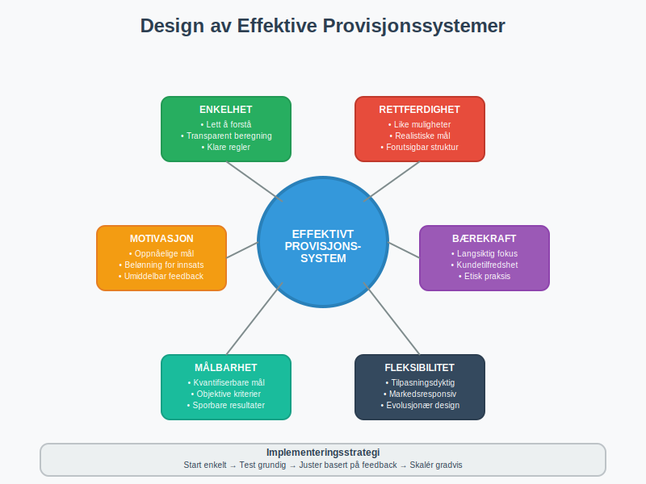
Digitaliseringsvirkningen på Provisjon
Modern teknologi har transformert how provisjoner beregnes, tracks og utbetales.
Automatiserte Provisjonssystemer
- Real-time tracking av salgsprestasjoner
- Automatisk beregning basert på predefinerte regler
- Integrated rapportering med regnskapssystemet
CRM-Integration
Customer Relationship Management (CRM) systems now provide:
- Detaljert salgssporing per kunde og product
- Advanced analytics for provisjonsoptimalisering
- Transparency for ansatte om earnings potential
Data Analytics og Provisjon
- Predictive modeling for optimalisering av provisjonssatser
- Performance benchmarking against industry standards
- Sentiment analysis av customer satisfaction connected til provisjoner
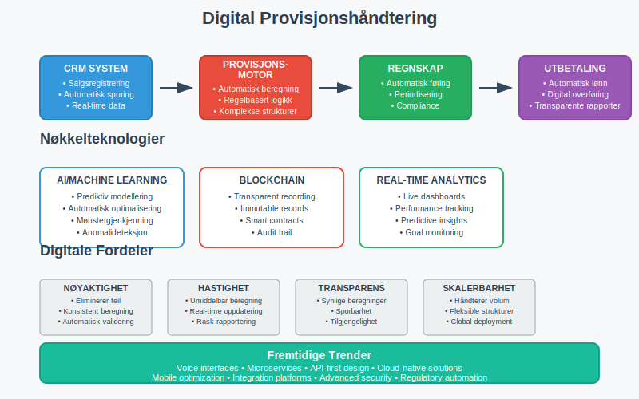
Internkontroll og Provisjonssystemer
Effective internkontroll er essential for å sikre korrekt håndtering av provisjoner.
Kontrollaktiviteter
Månedlige kontroller:
- Verifikasjon av salgsdata som grunnlag for provisjon
- Gjennomgang av beregninger og ratios
- Cross-checking between sales og accounting systems
Årlige revisjoner:
- Comprehensive review av provisjonsavtaler
- Assessment av goal achievement og payout accuracy
- Evaluation av system controls og autorizations
Segregering av Oppgaver
- Sales team registrerer salg
- HR department maintainer provisjonsavtaler
- Accounting beregner og utbetaler provisjoner
- Management approver exceptional payments
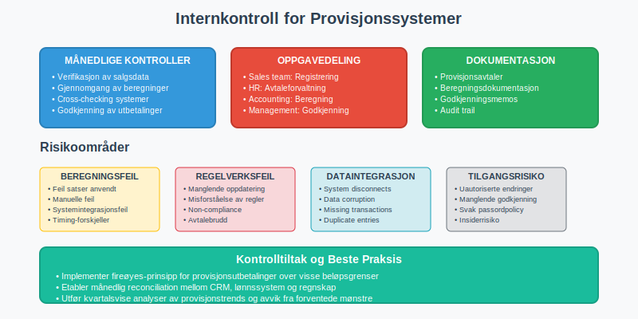
Provisjon og Kontantstrøm
Provisjonsordninger har significant impact på bedriftens kontantstrøm.
Kontantstrømeffekter
Positive effekter:
- Variable kostnader som følger revenue
- Reduced fixed costs sammenlignet med fast lønn
- Aligned incentives mellom ansatte og business success
Cash flow challenges:
- Lumpsum payments ved store salg
- Seasonal variations i provisjonsutbetalinger
- Delayed collections vs. immediate provisjon liability
Likviditetsplanlegging
Bedrifter must carefully plan for:
- Maximum potential provisjoner i gode perioder
- Minimum cash requirements for provisjonsutbetalinger
- Credit facilities for å handle timing mismatches
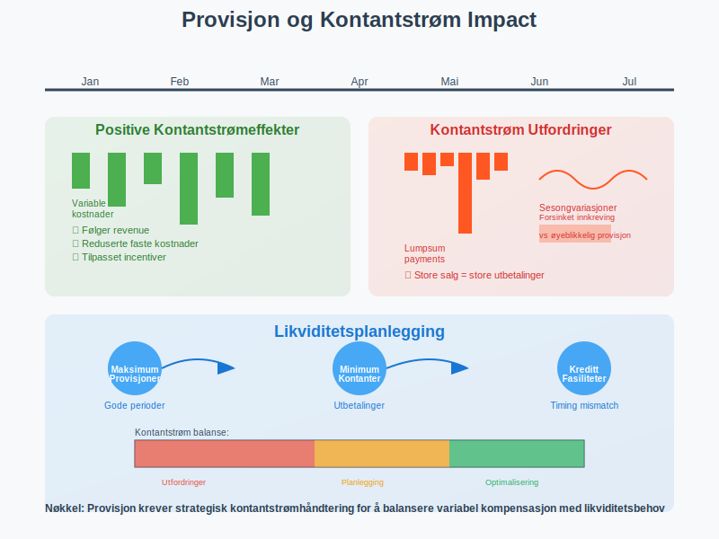
Internasjonale Forhold
For multinasjonale bedrifter kommer additional complexity omkring provisjon.
Valutaeksponering
- Provisjoner i foreign currency creates exchange rate risk
- Hedging strategies may be needed
- Accounting treatment av currency gains/losses
Skattemessige Implikasjoner
- Transfer pricing regulations when provisjoner cross borders
- Withholding taxes på provisjonsutbetalinger
- Double taxation issues og treaty benefits
Regulatory Compliance
- Local labor laws governing provisjon structures
- Financial reporting standards in different jurisdictions
- Anti-corruption og bribery considerations
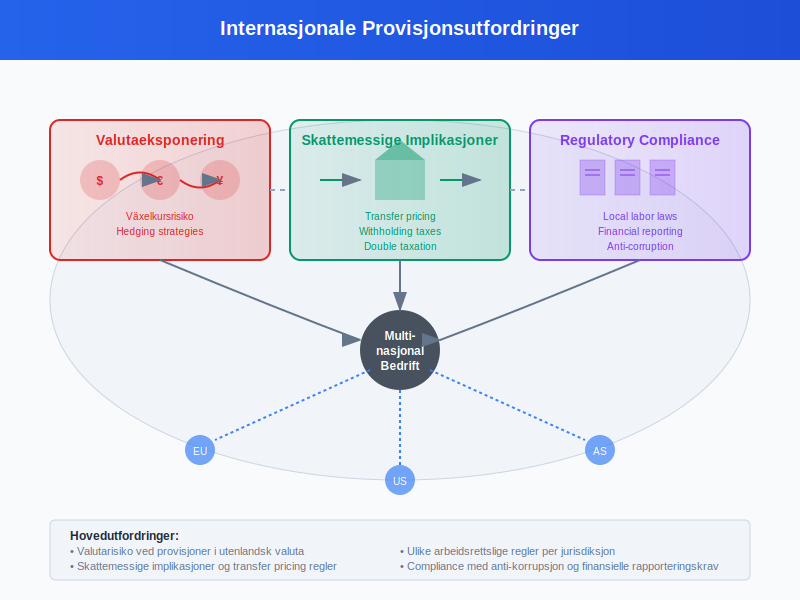
Fremtidstrender innen Provisjon
Provisjonssystemer evolves continuously som response til changing business environments.
Teknologiske Utviklinger
- AI-drevne provisjonsoptimaliseringer
- Blockchain for transparent og tamper-proof provisjonsrecords
- Real-time payments via digital platforms
Nye Kompensasjonsmodeller
- Subscription-based provisjoner for recurring revenue models
- Team-centric provisjoner rather than pure individual focus
- ESG-linked provisjoner connected til sustainability goals
Regulatory Evolution
- Increased transparency requirements
- Pay equity regulations affecting provisjon design
- Data protection laws impacting provisjon record keeping

Praktiske Tips for Bedrifter
For bedrifter som ønsker å implementere eller optimalisere provisjonssystemer:
Implementering
- Start enkelt: Begin med straightforward commission structures
- Communicate clearly: Ensure alle ansatte understands hvordan provisjon beregnes
- Test og adjust: Regularly review og refine provisjon programs
Juridisk Compliance
- Legal review av alle provisjonsavtaler
- Regular updates på changing labor regulations
- Documentation av all provisjonsrelated decisions
Regnskapsmessig Håndtering
- Implement robust systems for provisjonsberegning og -rapportering
- Regular reconciliation between sales data og accounting records
- Clear policies for provisjonsrelaterte accounting treatments
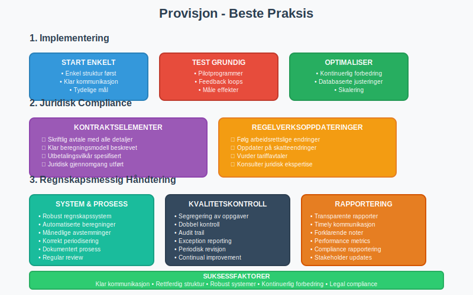
Vanlige Feil og Hvordan Unngå Dem
Regnskapsføringsfeil
Feil: Ikke periodisere provisjoner korrekt Løsning: Implement monthly accrual procedures
Feil: Confusion omkring skatteregler Løsning: Regular consultation med accounting professionals
Juridiske Fallgruver
Feil: Unclear provisjonsavtaler Løsning: Detailed, written agreements reviewed av legal counsel
Feil: Failure to comply med minimum wage requirements Løsning: Regular monitoring av total compensation levels
Operasjonelle Utfordringer
Feil: Complex provisjonssystemer som ansatte ikke forstår Løsning: Simplicity og transparency i commission structures
Feil: Inadequate systems for tracking sales og calculating commissions Løsning: Investment i robust technology platforms
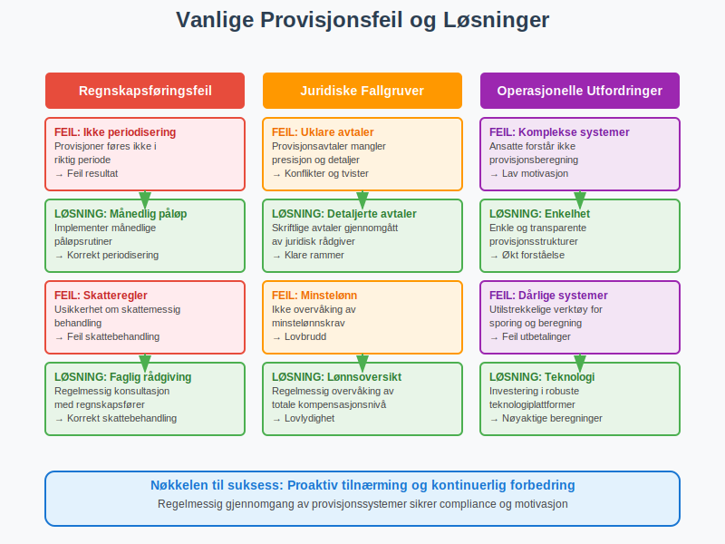
Provisjon remainS en powerful tool for motivating salgsprestasjoner og linking compensation til business results. Success requires careful attention til legal compliance, proper accounting treatment, og thoughtful system design som balances motivation med organizational sustainability.